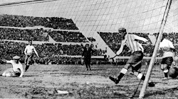

Um pouco sobre o Qatar: o país da Copa do Mundo de 2022
O país fica na península arábica na Ásia Continental, corresponde a uma área de aproximadamente 11.610 km2 até o norte do Golfo Pérsico. O Catar faz fronteira com a Arábia Saudita e é separado por um estreito do Golfo Pérsico do país Bahrein.
A população do Qatar é de aproximadamente 2.743.901 habitantes.
O país emergiu como potência, quando sua economia foi impulsionada pela exploração do petróleo. A
exportação de petróleo e gás natural correspondem juntos a 50% do Produto Interno Bruto do país.
O campo petrolífero mudou todo o cenário do país, sendo, hoje, considerado um dos mais ricos do
mundo.
Copa do Mundo
Esse evento é a maior e mais importante competição de futebol organizada pela FIFA e, atualmente, é composto por 32 seleções.
A Copa do Mundo aconteceu pela primeira vez em 1930, no Uruguai.
